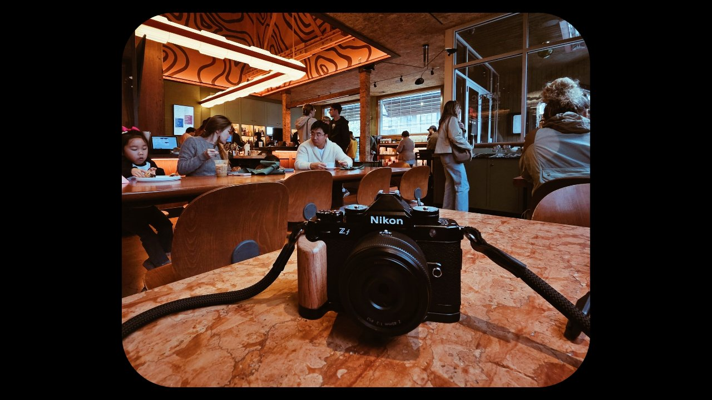
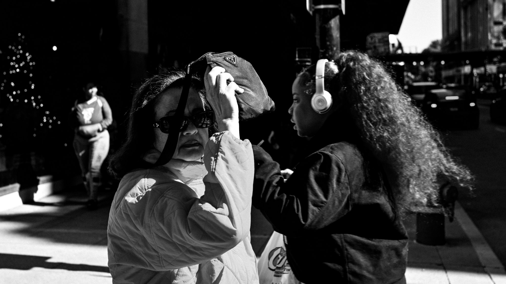
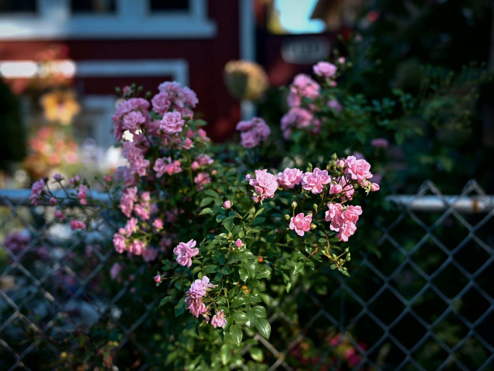
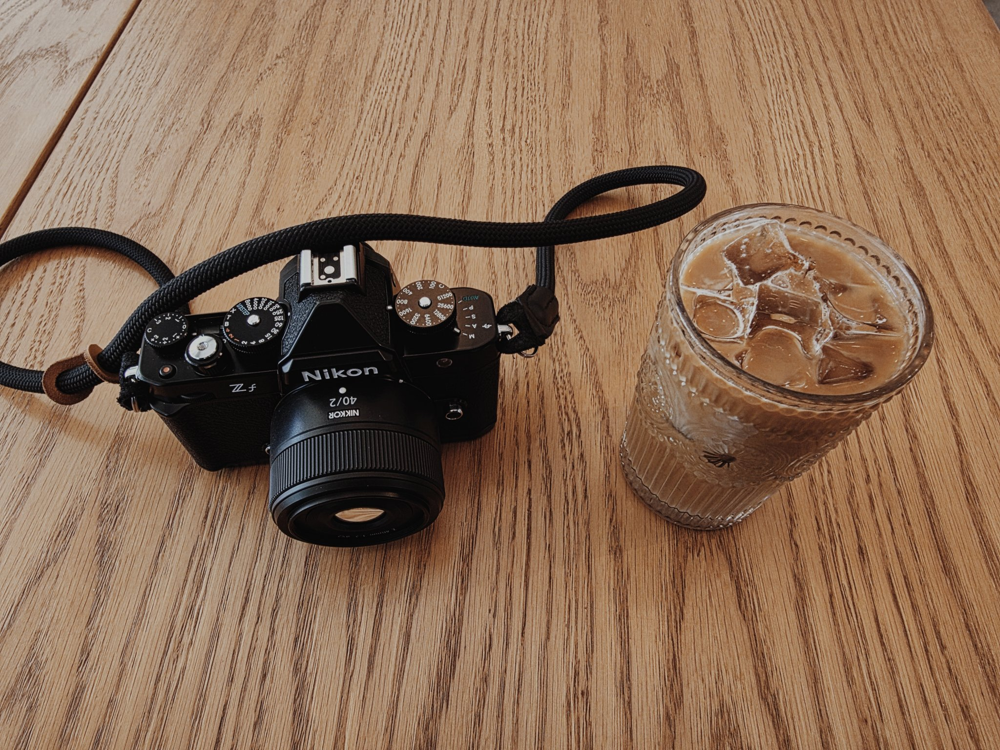

Chicago · Street Photography
Romanticizing
the mundane
through street
photography
I'm Kevin, a street photographer based in Chicago. I made this website so I can post my opinions and my art — pretty much anything that comes to mind.

In Between
The last project I put together was Apollo, my first ever concept project. The idea was shooting the moments that light chose.
Read the post →Samsung DeX in 2026
After a couple of months with the Z Fold 7, DeX is like using a Chromebook — and how good or bad the experience is depends entirely on the peripherals you pair it with.
Read the post →
Leftfoto Wood Handgrip for Nikon Zf — Review
In looks it succeeds — the rosewood really delivers. The fit and build quality are where it loses points. 6/10.
Read the post →
Street Photography in 2026: Is It Unethical Now?
Is there a correct approach?
Read the post →
Nikon Zf: First Impressions
This review isn't finished. What follows are all of my impressions so far from actually using the camera — I'll keep adding to it as I shoot more.
Read the post →Gallery
Selected work
Frames from walking Chicago with the Zf. New photos land here as they come in.
No photos yet.
Gear
The Kit
Deliberately small. One body, one lens, a strap, and a handful of recipes — everything here earns its place by getting carried every day.

Nikon Zf
Retro-styled full-frame body with proper mechanical dials and a dedicated black & white switch. Looks like a film camera because it basically dresses like one.
NIKKOR Z 40mm f/2 SE
Plastic, pancake-flat, feather-light — and the focal length that matches my eyes. Not the sharpest lens I own; the one that never comes off.
Camera strap
Not optional with this body. The Zf's grip is shallow; the strap shifts the weight to my neck and makes the camera disappear until it's needed.
Modern Chrome · Leica Sim · Fujichrome
Custom Picture Controls from Serban JPG's Nikon recipe archive, loaded on the Zf. Modern Chrome is the default; the other two rotate in with the light.
Panasonic S9
Sold me on small cameras, lost me on feel — no mechanical shutter was the dealbreaker. It walked so the Zf could run.
About
Kevin Camacho
Street photographer in Albany Park, Chicago. Chasing light.
I've been shooting for about ten years.
It started earlier than that, really. Ever since I was a child I've had this urge to capture what I saw — so I started by drawing and painting. That was my main thing. I've been an artist as long as I can remember; since I was five years old I knew I liked making things.
Photography gave me the ability of documentation I'd always wanted. I used to picture little frames of my life and save them away in my memory. I begged for a camera pretty much my entire childhood. I never got one — so I bought one for myself when I got older.
I shoot street photography and urban landscapes. I'm not very good at pretty much anything else, but I love carrying my camera around and documenting life as it goes. Street photography has a special pull for me — it's about capturing the moment I live in, so I can see it in the future when time has changed, life has changed, everything looks different. I want to cement what I saw.
My goal is simple — make things I like, and sometimes post them so other people can see them.
Chicago has been my muse for almost the entire ten years. I want to start traveling to more cities, but there's something special about Chicago.
I'm just here documenting what I feel.
Quick facts
- Based
- Albany Park, Chicago, IL
- Shooting
- ~10 years
- Current body
- Nikon Zf
- Current lens
- NIKKOR Z 40mm f/2 SE
- Format
- Digital & Film
- Working on
- Short documentaries
- Contact
- bwprojectphotography@gmail.com
New posts, occasionally.
No weekly emails. No spam. Just an occasional note when a new review or field note goes up — say hello and I'll write back.
Get in touch